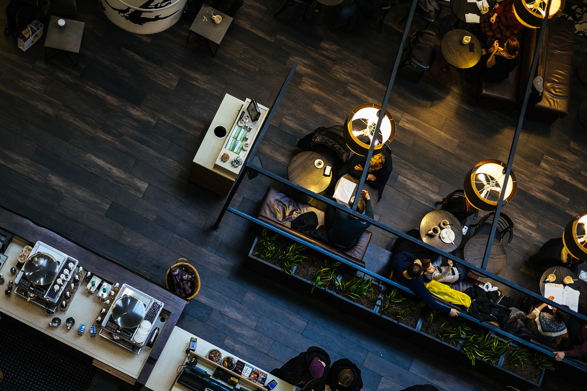

Piazza Navona
Plaça de Sant Bernat Calbó, 6 08005 Barcelona España8,8/10

8,8/10
Misto de verduras y mozzarella fritas, surtido de embutidos y quesos italianos
Agnolotti in Brodo (pasta casera rellena de carne de ternera en su proprio caldo) Ravioli ricotta e spinaci (pasta casera rellena de ricotta y espinacas con un toque de mantequilla y salvia)
Cosciotto di agnello al forno con patate alla duchessa e verdurine al vapore (Pierna de cordero al horno con patatas a la duquesa y verduritas al vapor) Parmigiana di patate, scamorza e zucchine (Parmigiana de patatas, queso scamorza y calabacin)
Tiramisu al Pandoro, pasticceria mista fruta seca, cafe' y limoncello
Precio por persona (IVA incluido). Bebidas no incluidas. El 25/12 en comida y cena. Se te solicitará una señal de 25 € directamente desde el restaurante para confirmar tu reserva.
Todo muuy rico en un italiano diferente! y muuy buen de precio!
Excelente !!!!
Excelente atención del personal muy amables y mucha simpatía en todo momento, el entrante que tenían en sugerencias nos sorprendió, las pizzas muy buenas, masa fina, crujiente y la calidad en los ingredientes se notaba. Los postres el broche final a una velada perfecta. Sin duda repetiremos.
Menu y bebida no incluida. Esta promoción se aplica sin consumo mínimo, ni restricciones de platos, para que comas lo que te apetezca y solamente prestes atención a disfrutar. No aplicable en terraza
Estuvimos a la hora del almuerzo, en medio de fogones, ollas y cocineros apasionados por lo que hacen. Bladimir Tovar, chef encargado de la cocina, fue el guía.